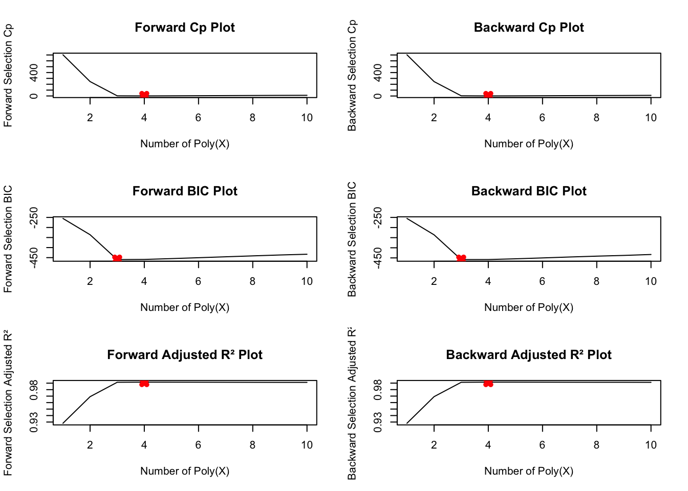

This document demonstrates Model Selection techniques using Best Subset Selection, Forward Selection, and Backward Selection methods. We will evaluate models using criteria such as Cp, BIC, and Adjusted R².
2 Setup
First, we need to load the necessary package and set up the dataset.
We will now plot the results for forward and backward selection using Cp, BIC, and Adjusted R².
# Set up plotting areapar(mfrow =c(3, 2))# Forward Selection Cpmin.cp =which.min(fwd.summary$cp)plot(fwd.summary$cp, xlab ="Number of Poly(X)", ylab ="Forward Selection Cp", type ="l", main ="Forward Cp Plot")points(min.cp, fwd.summary$cp[min.cp], col ="red", pch =4, lwd =5)# Backward Selection Cpmin.cp =which.min(bwd.summary$cp)plot(bwd.summary$cp, xlab ="Number of Poly(X)", ylab ="Backward Selection Cp", type ="l", main ="Backward Cp Plot")points(min.cp, bwd.summary$cp[min.cp], col ="red", pch =4, lwd =5)# Forward Selection BICmin.bic =which.min(fwd.summary$bic)plot(fwd.summary$bic, xlab ="Number of Poly(X)", ylab ="Forward Selection BIC", type ="l", main ="Forward BIC Plot")points(min.bic, fwd.summary$bic[min.bic], col ="red", pch =4, lwd =5)# Backward Selection BICmin.bic =which.min(bwd.summary$bic)plot(bwd.summary$bic, xlab ="Number of Poly(X)", ylab ="Backward Selection BIC", type ="l", main ="Backward BIC Plot")points(min.bic, bwd.summary$bic[min.bic], col ="red", pch =4, lwd =5)# Forward Selection Adjusted R²min.adjr2 =which.max(fwd.summary$adjr2)plot(fwd.summary$adjr2, xlab ="Number of Poly(X)", ylab ="Forward Selection Adjusted R²", type ="l", main ="Forward Adjusted R² Plot")points(min.adjr2, fwd.summary$adjr2[min.adjr2], col ="red", pch =4, lwd =5)# Backward Selection Adjusted R²min.adjr2 =which.max(bwd.summary$adjr2)plot(bwd.summary$adjr2, xlab ="Number of Poly(X)", ylab ="Backward Selection Adjusted R²", type ="l", main ="Backward Adjusted R² Plot")points(min.adjr2, bwd.summary$adjr2[min.adjr2], col ="red", pch =4, lwd =5)

9 Coefficients of Selected Models
Finally, we extract the coefficients for the best models from forward and backward selection.
# Coefficients for best models from forward selectioncoef(regfit.fwd, which.min(fwd.summary$cp)) # Best model by Cp
(Intercept) poly(X, 10, raw = TRUE)1 poly(X, 10, raw = TRUE)2
4.07200775 9.38745596 -2.15424359
poly(X, 10, raw = TRUE)3 poly(X, 10, raw = TRUE)5
0.55797426 0.08072292
coef(regfit.fwd, which.min(fwd.summary$bic)) # Best model by BIC
(Intercept) poly(X, 10, raw = TRUE)1 poly(X, 10, raw = TRUE)2
4.061507 8.975280 -2.123791
poly(X, 10, raw = TRUE)3
1.017639
coef(regfit.fwd, which.max(fwd.summary$adjr2)) # Best model by Adjusted R²
(Intercept) poly(X, 10, raw = TRUE)1 poly(X, 10, raw = TRUE)2
4.07200775 9.38745596 -2.15424359
poly(X, 10, raw = TRUE)3 poly(X, 10, raw = TRUE)5
0.55797426 0.08072292
# Coefficients for best models from backward selectioncoef(regfit.bwd, which.min(bwd.summary$cp)) # Best model by Cp
(Intercept) poly(X, 10, raw = TRUE)1 poly(X, 10, raw = TRUE)2
4.06013965 9.70201369 -2.13582615
poly(X, 10, raw = TRUE)5 poly(X, 10, raw = TRUE)7
0.30330191 -0.02419389
coef(regfit.bwd, which.min(bwd.summary$bic)) # Best model by BIC
(Intercept) poly(X, 10, raw = TRUE)1 poly(X, 10, raw = TRUE)2
4.0738073 9.9427063 -2.1784855
poly(X, 10, raw = TRUE)5
0.1721833
coef(regfit.bwd, which.max(bwd.summary$adjr2)) # Best model by Adjusted R²
(Intercept) poly(X, 10, raw = TRUE)1 poly(X, 10, raw = TRUE)2
4.06013965 9.70201369 -2.13582615
poly(X, 10, raw = TRUE)5 poly(X, 10, raw = TRUE)7
0.30330191 -0.02419389
10 Conclusion
In this lab, we have explored Model Selection techniques, including Best Subset Selection, Forward Selection, and Backward Selection. We evaluated models using Cp, BIC, and Adjusted R² criteria and extracted the best model coefficients for each approach.